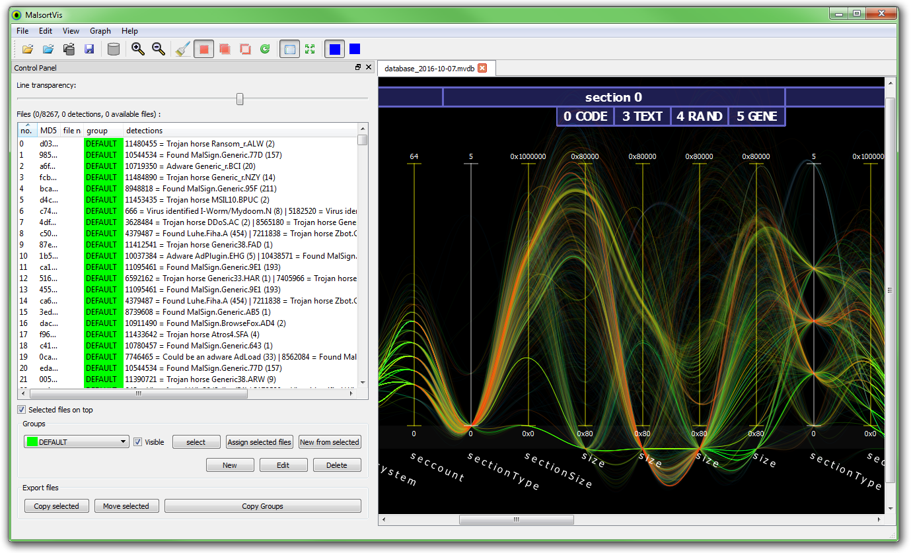
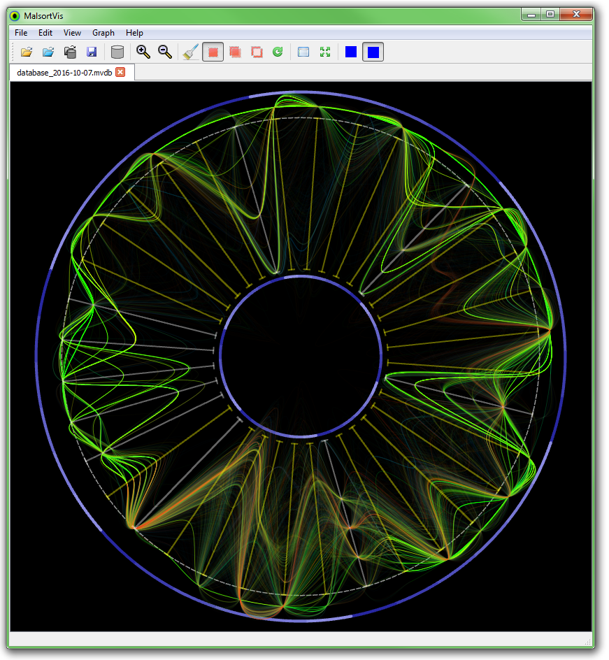
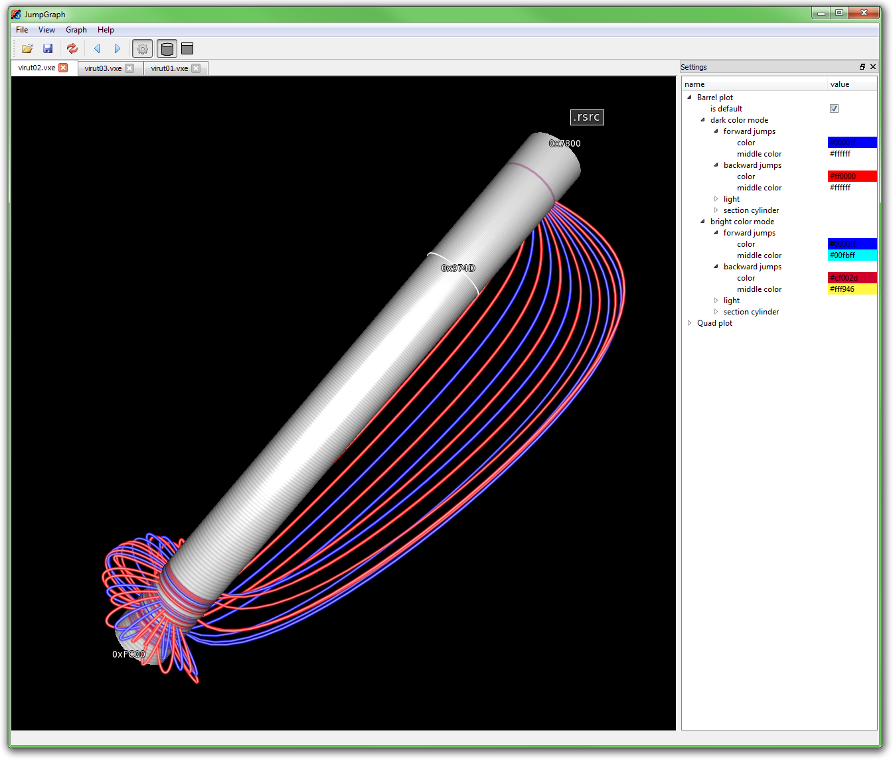
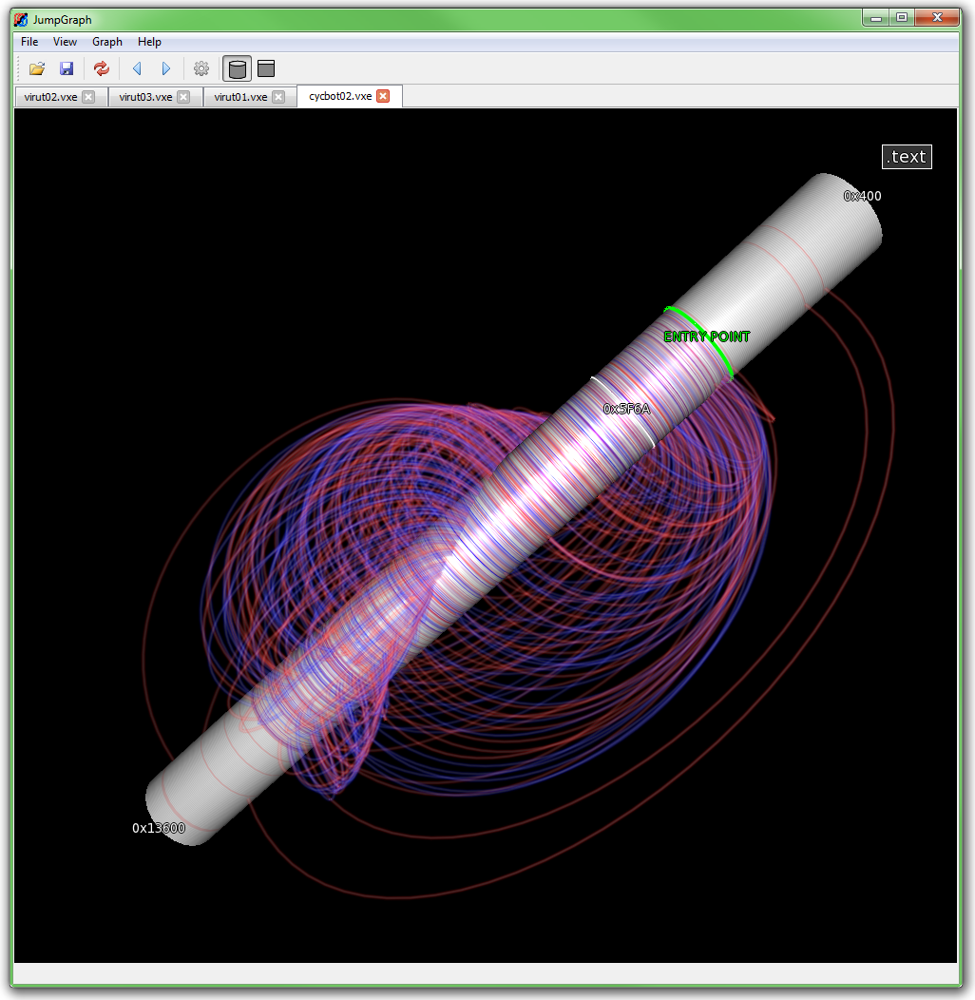
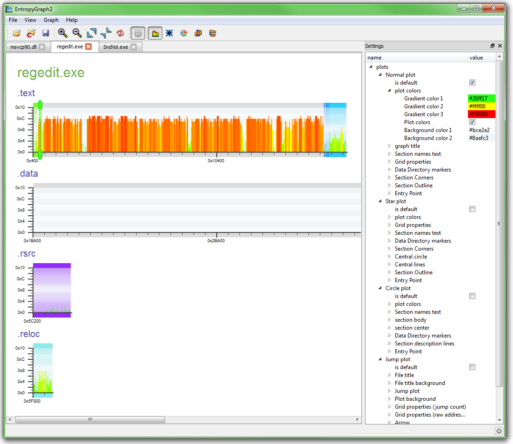
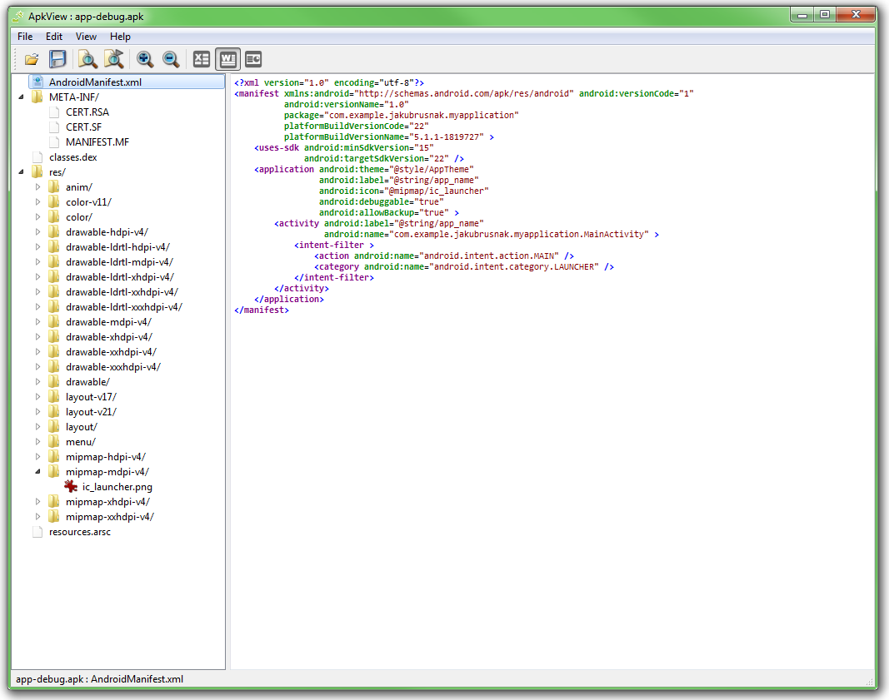

Nástroj na vizualizáciu vzoriek počítačových vírusov (PE EXE súbory) pomocou rovnobežných súradníc (parrallel coordinates). Graf je navrhnutý tak, aby sa zvýraznili skupiny s podobnými vlastnosťami vhodné na hromadnú detekciu. Tie sa dajú označiť a exportovať na ďalšie spracovanie. Program vie načítať veľké množstvo (rádovo stotisíce) vzoriek a zobraziť ich v reálnom čase v grafe. Naprogramované v C++ pomocou knižnice QT a OpenGL. Dáta o vzorkách sa ukladajú do lokálneho databázového súboru (SQLite).
 3D vizualizácia skokov v spustiteľných súboroch systému Windows. Valec predstavuje jednu zvolenú sekciu v EXE súbore a čiary po jeho obvode jednotlivé programové skoky (procesorová inštrukcia JMP). Naprogramované v C++ pomocou knižnice QT a OpenGL. Volumetrické čiary sú kreslené pomocou vertex a fragment shaderu.
 Vizualizácia entropie v spustiteľných súboroch systému Windows. Zobrazuje jednotlivé sekcie EXE súboru ako 2D graf, kde osa X sú dáta súboru a osa Y je entropia. Naprogramované v C++ pomocou knižnice QT a Cairo. Optimalizované aj na načítanie veľkých súborov a rýchle priblíženie na ľubovoľný úsek pomocou rôznych úrovní detailu.
Prehliadač spustiteľných súborov APK systému Android. Program vie zobraziť rôzne zdroje v textovej reprezentácii (aj so zvýraznením syntaxe), hexadecimálnej reprezentácii alebo grafickej reprezentácii (napríklad vložené obrázky a ikony priamo zobrazí). Naprogramované v C++ pomocou knižnice QT a OpenSSL. Aby som pri implementácii nemusel „znovu vymýšľať koleso“, boli preskúmané, využité a upravené niektoré voľne dostupné zdrojové kódy (Open Source) systému Android.
Tvorba a udržiavanie stránky zobrazujúcej štatistiky a výsledky detekcie nášho oddelenia aj v grafickej forme. Využité boli rôzne interné nástroje, skriptovací jazyk Python a bežné www technológie (Html, CSS, Javascript). Na ukladanie dát o vzorkách sa využívala MySQL databáza. Na vykresľovanie 2D grafiky bola použitá knižnica Cairo a formát SVG.
Tvorba a udržiavanie automatických skriptov v jazyku Python na triedenie množstva vzoriek počítačových vírusov. Výsledky sme denne využívali pri tvorbe hromadných definícií na skupiny malware. Tie nám umožnili udržiavať čo najmenšiu veľkosť antivírusovej databáze.
Jednoduché rozšírenie do prehliadača Chrome, ktoré umožní automatické kopírovanie osobných údajov hostí z hotelového informačného systému do informačného systému na tvorbu vernostných kariet. Tvorili sme to spolu s partnerkou ako darček pre jej rodičov, ktorí vedú penzión v Tatrách. Ja som mal na starosti programovanie, partnerka dokumentáciu. Naprogramované v JavaScripte. Ďalšie informácie na tomto odkaze.